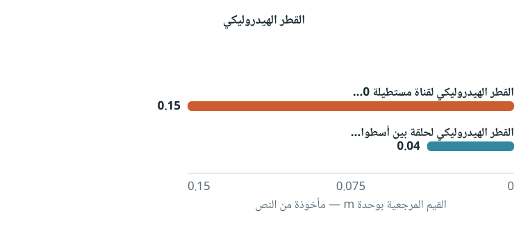

القطر الهيدروليكي
Hydraulic diameter
طول مميّز يُستبدل به القطر الهندسي في القنوات غير الدائرية، فيساوي أربعة أمثال مساحة المقطع مقسومة على المحيط المبلَّل، ويُستخدم في رقم رينولدز ومعامل الاحتكاك.
القطر الهيدروليكي طولٌ مميّز يُبنى ليجعل قوانين الأنابيب الدائرية صالحة للقنوات غير الدائرية. يُعرَّف بأنه أربعة أمثال مساحة مقطع التدفق مقسومة على المحيط المبلَّل، فالقناة الدائرية تعيد قطرها الهندسي نفسه، والقناة المستطيلة العريضة تعطي قيمة تقترب من ضعف ارتفاعها. ويُستعمل هذا الطول في رقم رينولدز وفي معامل الاحتكاك دارسي، فتصبح جداول الأنابيب الدائرية قابلة للتطبيق على مجاري الهواء والمبادلات ذات المقاطع المستطيلة أو الحلقية. والشرط الذي يجعله صالحاً هو أن يكون المقطع ممتلئاً بالسائل ومتماثلاً تقريباً؛ فحين تتغير مساحة المقطع على طول المسار، أو حين يكون التدفق غير ممتلئ، يفقد هذا الطول معناه ويُستبدل بقطر مكافئ يعتمد على نصف قطر هيدروليكي في القنوات المفتوحة. والخطأ الشائع أن يُحسب القطر الهيدروليكي من مساحة السطح الكلية للمبادل لا من مساحة مقطع مسار واحد، فينتج رقم رينولدز لا يطابق أي نظام تدفق حقيقي.
كيف تعمل الظاهرة؟
القطر الهيدروليكي يعمل لأن موازنة القوى في الأنبوب الدائري تربط انخفاض الضغط بنسبة مساحة المقطع إلى محيط الجدار الذي يحمل إجهاد القص. فحين يُعاد ترتيب هذه النسبة في مقطع غير دائري، يظهر العامل أربعة أمام مساحة المقطع مقسومة على المحيط المبلَّل، فيبقى إجهاد القص عند الجدار هو المتغير الحاكم ويبقى شكل المعادلة كما هو. ولهذا يعيد التعريف القناة الدائرية إلى قطرها الهندسي بالضبط، ويجعل القناة الحلقية الرقيقة تعطي قيمة تقترب من ضعف فجوة الحلقة، وهو ما يفسر لماذا تبرد الحلقات الضيقة أسرع من قناة مستديرة بالمقطع نفسه.
العلاقة بالأرقام
الصيغة D_h = 4A/P بلا بُعد في المعامل، ووحدتها وحدة طول. لقناة مستطيلة 0.30 m × 0.10 m: A = 0.03 m² وP = 0.80 m فينتج 0.15 m. ولحلقة بين أسطوانتين 0.10 m و0.06 m ينتج 0.04 m أي فرق القطرين. ويدخل هذا الطول في رقم رينولدز Re = ρVD_h/μ، فقناة مستطيلة بالسرعة نفسها تعطي رقم رينولدز أقل من أنبوب دائري بقطر يساوي عرضها، لأن قطرها الهيدروليكي أصغر.
مفاهيم متقاربة
القطر الهيدروليكي ليس قطراً هندسياً ولا متوسطاً لأبعاد المقطع، بل طول مكافئ يظهر في المعادلة فقط. ويُفصل عن القطر المكافئ في القنوات المفتوحة الذي يساوي أربعة أمثال نصف القطر الهيدروليكي (نسبة المساحة إلى المحيط المبلَّل) ويُستعمل مع رقم فرود لا مع رقم رينولدز وحده. ويُفصل كذلك عن القطر المتوسط لحبيبات وسط مسامي، فذاك يُقاس بالتوزيع الحجمي للحبيبات ويُستعمل في معادلات انخفاض الضغط عبر الوسط لا في مقطع قناة.
حدود التطبيق
يشترط التعريف مقطعاً مملوءاً بالسائل وثابتاً تقريباً على طول المسار؛ فإذا كان التدفق غير ممتلئ، كما في قناة مفتوحة جزئياً أو في أنبوب يجري نصفه فقط، لم يعد المحيط المبلَّل ممثلاً لجدار يحمل القص كله. وإذا تغيّرت مساحة المقطع على الطول، كأنبوب متدرج أو مبادل بممرات متعددة، لزم حساب رقم رينولدز على مقطع مرجعي معلن والتصريح به. ولا يعوّض هذا الطول عن تصحيح الخشونة النسبية، فقناتان بالقطر الهيدروليكي نفسه تختلفان في معامل الاحتكاك إذا اختلفت خشونتهما.

| الكمية | القيمة | المصدر |
|---|---|---|
| معامل التعريف في صيغة القطر الهيدروليكي | 4 — | [1] |
| القطر الهيدروليكي لقناة مستطيلة 0.30 m × 0.10 m | 0.15 m | [1] |
| القطر الهيدروليكي لحلقة بين أسطوانتين بقطرين 0.10 m و0.06 m | 0.04 m | [2] |
المصادر
- 1 Fluid Mechanics, 8th ed. — Frank M. White — McGraw-Hill Education (2015). openlibrary.org/books/OL28475368M/Fluid_Mechanics · اطُّلع عليه 2026-11-28
- 2 Fundamentals of Heat and Mass Transfer, 7th ed. — Bergman, Lavine, Incropera, DeWitt — John Wiley & Sons (2011). openlibrary.org/books/OL25132850M/Fundamentals_of_heat_and_mass_transfer · اطُّلع عليه 2026-11-28
- 3 Perry's Chemical Engineers' Handbook, 9th ed. — Green & Southard — McGraw-Hill Education (2018). openlibrary.org/books/OL27351295M/Perry's_Chemical_Engineers'_Handbook_9th_Edition · اطُّلع عليه 2026-11-28
استشهد بهذا المصطلح
الصيغتان مبنيتان من بيانات الصفحة نفسها: العنوان والتاريخ ورابط النسخة المنشورة.
القطر الهيدروليكي — Hydraulic diameter. (2026). ديوان المعرفة — انفراد. https://infiradev.com/diwan/terms/term-hydraulic-diameter.html
@misc{term-hydraulic-diameter2026,
title = {القطر الهيدروليكي},
titleaddon = {Hydraulic diameter},
howpublished = {{ديوان المعرفة — انفراد} — مرجع علمي عربي},
year = {2026},
url = {https://infiradev.com/diwan/terms/term-hydraulic-diameter.html},
urldate = {2026-11-28},
note = {مراجعة علمية: Abdullah Al-Huwaidi}
}
راجعه: Abdullah Al-Huwaidi · 2026-11-28 · آخر تحديث 2026-11-28